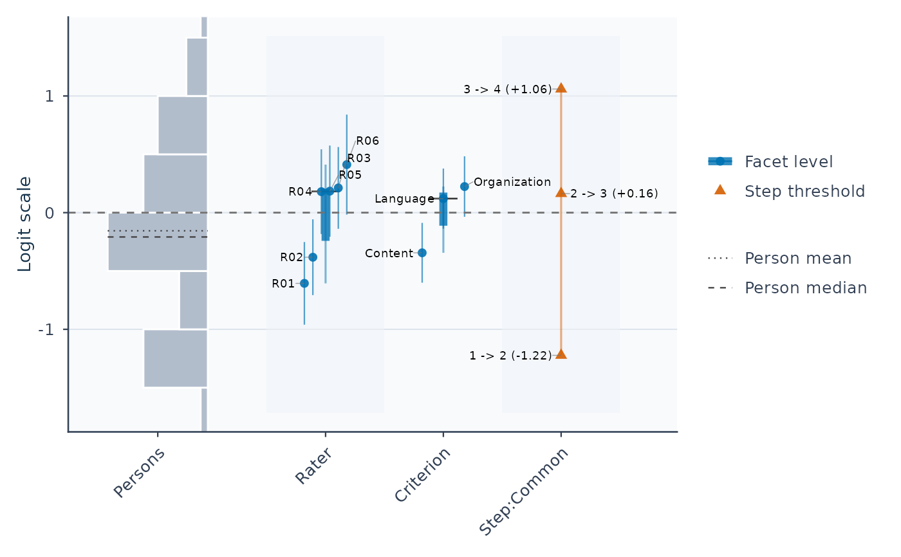

Fit many-facet ordered-response models with a flexible number of facets
Source:R/api-estimation.R, R/core-cml.R, R/core-comparison-fit.R
fit_mfrm.RdEstimate effects on ordered ratings—such as rater severity, task or criterion
difficulty, category thresholds, and supported discriminations—together with
Person abilities where the estimator supplies them. Each row of data is one
observed rating event.
Usage
fit_mfrm(
data,
person = NULL,
facets = NULL,
score = NULL,
model = c("RSM", "PCM", "GPCM"),
method = c("MML", "JML", "JMLE", "CML"),
step_facet = NULL,
slope_facet = NULL,
rating_min = NULL,
rating_max = NULL,
weight = NULL,
anchors = NULL,
group_anchors = NULL,
population_formula = NULL,
person_data = NULL,
facet_interactions = NULL,
spec = NULL,
control = list(),
...
)
# S3 method for class 'mfrm_cml_fit'
summary(object, ...)
# S3 method for class 'mfrm_cml_fit'
print(x, ...)
# S3 method for class 'mfrm_comparison_fit'
print(x, ...)
# S3 method for class 'mfrm_comparison_fit'
summary(object, ...)Arguments
- data
A
data.framein long format with one row per observed rating event. Grouped or rowwise tibbles are analyzed as one table; dplyr grouping metadata is ignored. The named model columns define the design. Pass the rating table itself, not the result ofdescribe_mfrm_data().- person
Column name for Person identifiers (character scalar; may be supplied via
spec$person).- facets
Character vector of one or more non-Person facet column names (may be supplied via
spec$facets). Reserved internal names (Person,Score,Weight,score_k,theta,steps,interactions,log_slopes,beta,log_sigma2) cannot be used as facet names.- score
Column name for observed integer category scores (character scalar; may be supplied via
spec$score).- model
Measurement model:
"RSM"(default; shared category thresholds),"PCM"(facet-specific thresholds viastep_facet), or"GPCM"(positive facet-level discriminations viaslope_facet).- method
Estimator:
"MML"(default marginal maximum likelihood),"JML"("JMLE"alias; joint maximum likelihood), or"CML"(conditional maximum likelihood on Person totals for unit-weight RSM/PCM with preserved categories).- step_facet
Facet whose levels own separate step ladders in
PCMandGPCM(omit forRSM; required explicitly forGPCMandCMLPCM).- slope_facet
Facet whose levels own positive discriminations in
GPCM(single facet name for one-familyGPCM, or ordered length-two character vector for the experimental two-family MML route). Usespec$slope_referenceto name the geometric-mean-one family (default: first slope facet);step_facetandnoncenter_facetselect their roles independently among declared non-Person facets. See fit_mfrm_technical_details.- rating_min, rating_max
Optional intended minimum and maximum category scores. Supply together (often with
spec = list(category_policy = "preserve")) when boundary categories may be unobserved.- weight
Optional column name of positive observation weights.
- anchors
Optional direct-anchor
data.framewith columnsFacet,Level, andAnchorfixing logit coordinates (non-Person facets in MML; JML also permits Person anchors).- group_anchors
Optional group-mean constraint
data.framewith columnsFacet,Level,Group, andGroupValue.- population_formula
Optional one-sided Person-level latent-regression formula (e.g.,
~ group + pretest) for unidimensional conditional-normalmethod = "MML".- person_data
Optional one-row-per-Person
data.framesupplying covariates referenced bypopulation_formula.- facet_interactions
Optional confirmatory two-way non-Person interaction terms (e.g.,
"Rater:Criterion") forRSMandPCM.- spec
Optional named
listof measurement-model, data-scale, and identification settings (see Reusable model specification (spec) below). Explicit top-level arguments override matching entries inspec, so a sharedbase_speccan be reused acrossdescribe_mfrm_data(),review_mfrm_anchors(),fit_mfrm(), andexport_mfrm_model()or varied across candidate models.- control
Named
listof numerical integration, optimizer, JML adjustment, post-fit shrinkage, and subfit controls (21 supported keys; see Numerical and post-fit controls (control) below).- ...
Fully named legacy flat arguments from the supported
specandcontrolsettings. Unnamed arguments, abbreviated or unknown names, and duplicate specifications acrossspec/controland...fail immediately. Unused by the CML and comparison-fit summary/print methods.- object, x
A fitted CML result for its summary, print, covariance and log-likelihood methods, or a comparison-only result for its summary and print methods.
Value
Ordinary
MML/JML(fit_scope = "full",jml_penalty = "none"): an object of classmfrm_fitcontainingsummary,facets$person,facets$others,steps,slopes(forGPCM),readiness,interactions,population,data_review,config,prep, andopt. Always inspectsummary(fit)$decisionand parameter eligibility columns (EstimateUse,SEEligible,CIEligible) before substantive reporting.method = "JML", control = list(jml_penalty = "jeffreys"): a separatemfrm_jeffreys_fitpoint-estimate object (summary.mfrm_jeffreys_fit()).method = "CML"(fit_scope = "full"): anmfrm_cml_fitobject for structural locations/steps andmfrm_facet_intervals()contrasts.control = list(fit_scope = "comparisons", comparison_review = ...): anmfrm_comparison_fitobject extracted withinteraction_effect_table().
See Detailed return-object provenance in fit_mfrm_technical_details for every column, boundary-audit record, and replay metadata field.
Details
Use the named arguments for a first analysis. A reusable
spec = list(...) groups model and identification choices across
describe_mfrm_data(), review_mfrm_anchors(), fit_mfrm(), and
export_mfrm_model(); control = list(...) groups estimation and
post-fit settings. Historical
flat arguments remain supported when their full names are supplied, including
through do.call(). Only the first four positional arguments (data,
person, facets, score) retain their old positions. Use full names for
later arguments; abbreviations of names routed through ... are rejected.
See mfrmr_api_migration_030 for before/after calls and export scope limits.
For help choosing an analysis, read the bundled guide with
vignette("mfrmr-model-choice", package = "mfrmr"). For exact specification
keys, estimator assumptions and numerical checks, use
fit_mfrm_technical_details; both guides are available offline in a standard
package installation.
Core five-step workflow
New analyses can reach the package's three pillars—measurement, G-theory planning, and rater feedback—through five entry points:
Check the data and rubric:
describe_mfrm_data(ratings, spec = spec)(andreview_mfrm_anchors(ratings, spec = spec)when anchoring).Fit the measurement model:
fit <- fit_mfrm(ratings, spec = spec).Audit response fit and rater behavior:
diag <- diagnose_mfrm(fit)(followed byestimate_bias()oranalyze_dff()when needed).Evaluate rating-plan generalizability:
mfrm_g_study()andmfrm_d_study()on observed scores.Visualize and report:
plot(fit)/plot(res)andmfrm_report(mfrm_results(fit, diagnostics = diag))(ormfrmr_output_guide("core_workflow")for the route map).
Choose a model and its population
For the Rater and Criterion columns in the Examples, the model choices
are below. A slope family gives one discrimination per level of its owner;
"two families" does not mean two ability dimensions or just two slopes.
No Q matrix is required or accepted by this unidimensional API.
| Model | Step owner | Slope owner | MML population |
RSM |
Shared | Fixed at one | Fixed N(0,1) |
PCM |
Criterion |
Fixed at one | Fixed N(0,1) |
One-family GPCM
|
Criterion |
Criterion |
Estimated mean and SD |
Two-family GPCM
|
Rater |
Criterion, then Rater
|
Explicit fixed N(0,1) |
Supply these owner names through step_facet and slope_facet; for two
families use slope_facet = c("Criterion", "Rater"). The first three rows
show their default MML populations. Two-family settings must be chosen
explicitly; see "Two slope families" in fit_mfrm_technical_details.
One-family slopes are relative.
Changing only model therefore need not hold the population assumptions
constant. For RSM/PCM, estimating its mean and SD requires
population_formula = ~ 1 and person_data = unique(ratings["Person"]).
This is a model choice, not a universal recommendation. Fixing both the
population SD and the one-family GPCM slope geometric mean to one is a
narrower model, not just an alternative reporting scale.
In ordinary RSM/PCM, fixed N(0,1) together with the default
noncenter_facet = "Person" centers all non-Person locations and every
step ladder. Without anchors changing these constraints, this also fixes
the overall ability-to-difficulty location; it is not merely identification.
For a complete binary two-rater by two-item design, symmetry forces the
average model-implied population success probability to 0.5. Unit Rasch
slopes already set the logit scale, so fixing the population SD to one is
an additional distributional assumption. For ordinary cohort calibration,
explicitly estimate the mean and SD using population_formula = ~1 and
matching person_data; inspect the reported inference limits. To estimate
only the mean, additionally set population_sd = 1 in supported direct MML.
Alternatively, a non-Person noncenter_facet permits an overall difficulty
location while retaining fixed N(0,1). These choices are different models.
Existing defaults remain for compatibility. Ordinary RSM/PCM export currently
requires a fixed N(0,1) population and rejects estimated-population fits;
do not drop population_formula to make an export run.
Start with the complete RSM Examples. For PCM, add step_facet and change
model; for one-family GPCM, also explicitly choose slope_facet and
read the population choice above. Keep the data-column and rubric arguments.
The complete two-family call and its narrower output workflow are in
online two-family workflow.
Its zero-based scores and ordered owners require
the explicit preparation described there; changing slope_facet alone
is insufficient.
Choose an estimator and the result you need
The ordinary worked example uses RSM/MML. Choose the model and estimation assumptions for your question before choosing a table or figure.
Abilities, a population model or GPCM inference: use
method = "MML"and inspectsummary(fit)$decision. Its interpretation depends on the declared ability distribution. Ordinary RSM/PCM fixes N(0,1) by default;population_formula = ~ 1instead estimates its mean and SD. GPCM estimates them by default for one slope family; two families use fixed N(0,1). See "Choose a model and its population" above.RSM/PCM structural effects without an ability distribution: use
method = "CML", category_policy = "preserve". Readsummary(fit)$locationsand$steps, thenmfrm_facet_intervals(). CML returns no Person abilities or population SD; ordinary diagnostics and consolidated reports do not apply. See "Conditional maximum likelihood" in fit_mfrm_technical_details for assumptions and supported outputs.Joint point estimates or FACETS comparisons: explicitly select JML when that estimand is intended. With few ratings per Person, adding Persons does not remove incidental-parameter bias. Stored structural SEs or corrected-JML root uncertainty are not automatically truth intervals.
Facet names are your column names, not fixed roles imposed by the package.
For example, facets = c("Judge", "Task") uses those two columns; it does
not require columns called Rater or Criterion. Supply the same names to
follow-up functions and use the fitted level labels for contrasts or curves.
Begin with the Examples section, then use the technical reference map below
for your selected model. mfrmr_methods_reference separates measurement,
G-theory assessment planning and observed-score agreement questions.
Reusable model specification (spec)
A single named spec list can be shared across describe_mfrm_data(),
review_mfrm_anchors(), fit_mfrm(), and export_mfrm_model() (note that
export_mfrm_model() defaults omitted anchor_policy to "error" before
writing files, whereas fit_mfrm() defaults to "warn"):
| Group | Supported spec keys (34 total) |
| Data & category ladder (10) |
person, facets, score, weight, rating_min, rating_max, category_policy ("collapse" or "preserve"), keep_original, missing_codes, repeated_ratings ("review" or "independent") |
| Model & slope/step owners (6) |
model ("RSM", "PCM", "GPCM"), method ("MML", "JML", "CML"), step_facet, slope_facet, slope_reference, gpcm_mml_identification ("free_population" or "fixed_standard_normal") |
| Anchors, orientation & centering (10) |
anchors, group_anchors, anchor_policy ("warn", "error", "silent"), min_common_anchors, min_obs_per_element, min_obs_per_category, noncenter_facet, centering_scope ("facet", "remainder", "anchor_origin"), positive_facets, dummy_facets
|
| Interactions & latent regression (8) |
facet_interactions, min_obs_per_interaction, interaction_policy, population_formula, person_data, person_id, population_policy ("error" or "omit"), population_sd
|
Numerical and post-fit controls (control)
Pass computational and post-processing controls in control = list(...)
using the groups below. Numerical accuracy settings differ from choices
that change the estimator or output, such as JML penalties, shrinkage and
comparison-only fitting; choose those for the intended analysis.
| Group | Supported control keys (21 total) |
| MML quadrature & engine (8) |
quad_points (31), mml_engine ("direct", "em", "hybrid"), mml_integration ("fixed", "adaptive", "auto"), mml_accuracy_control, mml_starts, gpcm_mml_start, em_score_tol, checkpoint
|
| Optimizer & console (4) |
maxit (400), reltol (1e-9), optimizer ("auto", "BFGS", "L-BFGS-B"), progress (FALSE) |
| JML penalty & bias adjustment (3) |
jml_penalty ("none", "jeffreys"), jml_correction_order, jml_correction_sampling ("fixed_rosters", "random_rosters") |
| Post-fit shrinkage & diagnostics (4) |
facet_shrinkage ("none", "empirical_bayes", "laplace"), facet_prior_sd, shrink_person (FALSE), attach_diagnostics (FALSE) |
| Comparison-only subfit (2) |
fit_scope ("full", "comparisons"), comparison_review
|
Technical reference map
Every specialist mathematical and algorithmic section is preserved in full in fit_mfrm_technical_details:
Scale & response equations: Model, Logistic metric (D = 1), Weighting policy, Input requirements, Facet effects and rating counts.
MML & GPCM identification / quadrature: GPCM model and inference, Two slope families, MML integration workflow, MML inference conditions, Information-criterion contract.
JML, Jeffreys & CML estimators: Estimator choice and the JML incidental-parameter caveat, Corrected JML, Jeffreys-penalized JML, Conditional maximum likelihood, All-minimum and all-maximum Persons.
Anchors, interactions, latent regression & subfits: Anchors and scale constraints, Anchor origin and cohort means, Model-estimated facet interactions, Comparison-only estimation, Latent-regression workflow, Latent-regression standard-error caveat, References.
Examples
library(mfrmr)
ratings <- load_mfrmr_data("example_operational")
head(ratings)
#> Study Person Rater Criterion Score Group
#> 1 OperationalExample P001 R01 Language 4 A
#> 2 OperationalExample P001 R01 Organization 2 A
#> 3 OperationalExample P001 R02 Content 4 A
#> 4 OperationalExample P001 R02 Language 3 A
#> 5 OperationalExample P001 R02 Organization 2 A
#> 6 OperationalExample P002 R01 Content 3 A
# 1. Reusable specification shared from data check to model fitting
spec <- list(
person = "Person",
facets = c("Rater", "Criterion"),
score = "Score",
rating_min = 1,
rating_max = 4,
category_policy = "preserve",
model = "RSM",
method = "MML"
)
data_check <- describe_mfrm_data(ratings, spec = spec)
data_check$row_retention
#> Stage Rows DroppedRows
#> 1 input_selected_columns 282 0
#> 2 after_missing_and_weight_filter 282 0
#> DroppedReason
#> 1
#> 2 missing values or non-positive weights
fit <- fit_mfrm(ratings, spec = spec, control = list(quad_points = 31))
plot(fit)

results <- summary(fit)
results$person_overview
#> # A tibble: 1 × 11
#> Persons DistributionN ReviewExcludedExtremeE…¹ EstimateUse Mean SD Median
#> <int> <int> <int> <chr> <dbl> <dbl> <dbl>
#> 1 48 48 0 source_fit… -0.155 0.824 -0.208
#> # ℹ abbreviated name: ¹ReviewExcludedExtremeEAPs
#> # ℹ 4 more variables: Min <dbl>, Max <dbl>, Span <dbl>, MeanPosteriorSD <dbl>
results$facet_overview
#> # A tibble: 2 × 7
#> Facet Levels MeanEstimate SDEstimate MinEstimate MaxEstimate Span
#> <chr> <int> <dbl> <dbl> <dbl> <dbl> <dbl>
#> 1 Criterion 3 0 0.302 -0.344 0.224 0.568
#> 2 Rater 6 -4.64e-18 0.399 -0.606 0.412 1.02
results$decision
#> Interpretation
#> 1 Fit-readiness requirements satisfied; formal precision review required
#> FormalInference FitReadiness
#> 1 No ready
#> Why
#> 1 Formal precision support has not been evaluated. These checks assess numerical readiness and the requested precision method under the specified model; they do not establish model adequacy or finite-sample coverage for this design.
#> NextAction
#> 1 Run `diagnose_mfrm()` and pass its result as `diagnostics =` to evaluate formal precision support; fit readiness alone is not a formal-inference decision.
# 2. Direct top-level override on the same shared spec (e.g., PCM)
fit_pcm <- fit_mfrm(
ratings, spec = spec, model = "PCM", step_facet = "Criterion",
control = list(quad_points = 15, maxit = 120)
)
summary(fit_pcm, profile = "fit", detail = "brief")
#> Many-Facet Measurement Model Summary
#> Model: PCM | Method: MML | N: 282 | Persons: 48 | Facets: 2 | Categories: 4
#>
#> Decision
#> - Interpretation: Fit-readiness requirements satisfied; formal precision
#> review required
#> - Formal inference: No
#> - Why: Formal precision support has not been evaluated. These checks assess
#> numerical readiness and the requested precision method under the specified
#> model; they do not establish model adequacy or finite-sample coverage for
#> this design.
#> - Next: Run `diagnose_mfrm()` and pass its result as `diagnostics =` to
#> evaluate formal precision support; fit readiness alone is not a
#> formal-inference decision.
#> MML engine: direct (requested: direct) | Integration: fixed non-adaptive
#> Gauss-Hermite, q=15 | latent dimensions=1
#> Population identification: fixed N(0,1) | discrimination=1
#> Centering: whole declared facet, including anchors and group totals.
#> LogLik: -343.460 | Canonical MML AIC: 712.919 | Person-BIC: 737.245 | Sclove
#> SABIC: 696.461
#> Integration selection guard: criteria are displayed for screening/review
#> only; automatic deltas, weights, preferences, and LRT are disabled at q=15.
#> Use q >= 31 as the comparison starting grid and check a denser common grid
#> when the decision is close.
#>
#> Visual workflow (in order)
#> Priority Visual Required Available
#> 1 mfrmr Wright map with SE TRUE TRUE
#> 2 FACETS-style Wright map FALSE TRUE
#> 3 Infit pathway FALSE FALSE
#> Interpretation
#> Diagnostic interpretation available
#> Diagnostic interpretation available
#> Unavailable
#> Plot commands are stored in `$required_visual$Route`.
#>
#> Status
#> - Overall status: Fit completed; review diagnostics before reporting
#> - Convergence: converged (severity: pass, maximum absolute gradient: 8.86e-06)
#> - Estimation path: PCM / direct
#> - Reporting readiness: Fit completed; diagnostics and reporting review can
#> proceed
#>
#> Workflow readiness
#> Domain Status
#> Fit Checks passed
#> Numerical Checks passed
#> Data Checks passed
#> Design Connectivity checked
#> Stability Checks passed
#> Diagnostics Not assessed
#> Reporting Ready for diagnostic review
#>
#> Key warnings
#> - No population model was requested; MML used an unconditional normal person
#> distribution.
#>
#> Next actions
#> - Run `diagnose_mfrm()` and pass its result as `diagnostics =` to evaluate
#> formal precision support; fit readiness alone is not a formal-inference
#> decision.
#> - After reviewing convergence, run `review <- summary(fit, profile = "facets",
#> detail = "brief")` for the comprehensive measurement review; FACETS software
#> is not required.
#> - Then draw the complete native Wright map with `plot(fit, type = "wright",
#> show_ci = TRUE, top_n = Inf, preset = "publication")`.
#> - Reuse `review$results$diagnostics`; call `diagnose_mfrm()` again only for
#> residual PCA or other custom settings.
#> - Use `reporting_checklist(fit, diagnostics = review$results$diagnostics)` for
#> reporting readiness.
#>
#> Facet measure overview
#> Facet Levels MeanEstimate SDEstimate MinEstimate MaxEstimate Span
#> Criterion 3 0 0.312 -0.359 0.199 0.559
#> Rater 6 0 0.404 -0.608 0.426 1.034
#>
#> Person measure distribution (aggregate; no identifiers)
#> Persons DistributionN ReviewExcludedExtremeEAPs Mean SD Median Min
#> 48 48 0 -0.134 0.831 -0.171 -1.742
#> Max Span MeanPosteriorSD Interpretation
#> 1.532 3.273 0.48 Subject to the fit's interpretation decision
#>
#> Step parameter summary
#> StepFacet Steps Min Max Span Monotonic
#> Content 3 -1.725 1.564 3.289 TRUE
#> Language 3 -0.970 0.930 1.899 TRUE
#> Organization 3 -1.093 0.632 1.725 TRUE
#>
#> Analyses intentionally not run by summary
#> Section Status
#> Bias / DIF Not run automatically
#> Residual PCA Not run automatically
#> Linking / anchor drift Not run automatically
#> Detail
#> Bias/DIF requires an explicitly chosen substantive contrast and is not screened automatically.
#> Residual PCA is not computed by the summary workflow; request it explicitly with diagnose_mfrm().
#> Anchor drift/linking requires an explicit multi-fit or multi-wave design and is not inferred automatically.
#>
#> Section availability requiring attention
#> Section Status
#> Diagnostics Not requested
#> Detail
#> The fit profile does not compute diagnostics. Use profile = 'facets' or 'reporting' to request them.
#>
#> Structured result access
#> - Use `summary(fit, profile = "facets")` for the comprehensive measurement review; FACETS software is not required.
#> - Use `summary(fit, detail = "full")` for legacy fit-level detail.
if (FALSE) { # \dontrun{
# Optional repeated fitting: compare specified starting values via control
reviewed <- fit_mfrm(
ratings, spec = spec,
control = list(mml_starts = c(0, 0.5, -0.5))
)
summary(reviewed)$starting_values
} # }